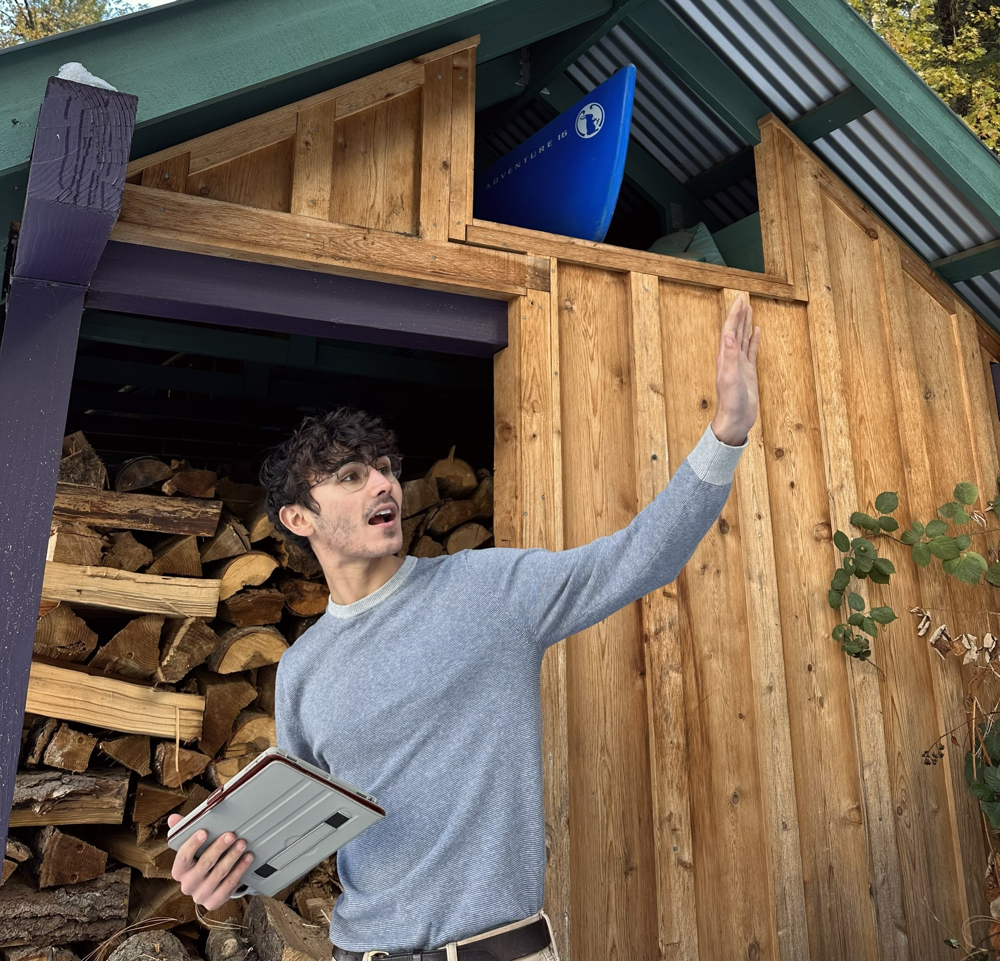
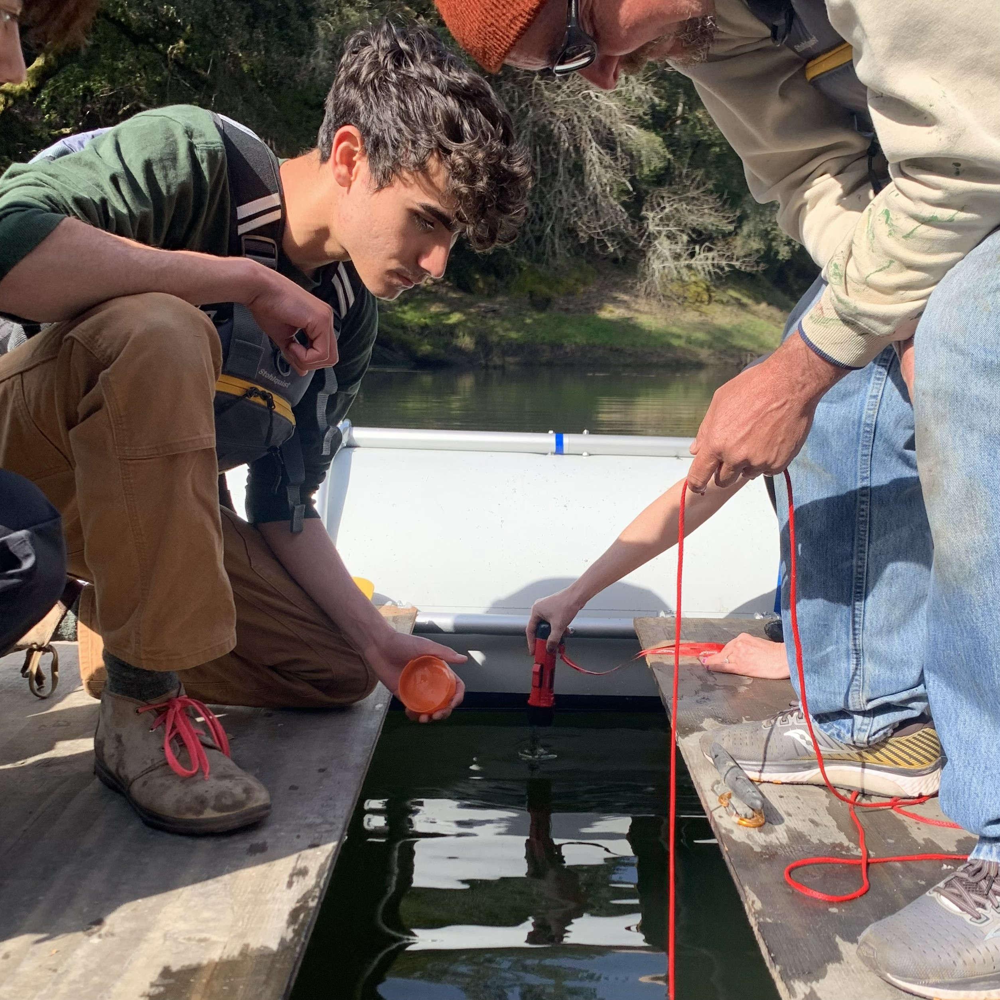

Certification
Certified Wildfire Mitigation Specialist
Professional training focused on defensible space, structure survivability, mitigation planning, and wildfire risk communication.
Galleher Geospatial
A collection of experiences in forestry, wildfire mitigation, and ecological modeling.
Wildfire & Forestry
Ecology can be complex, but at its core, it is a practice in noticing. Noticing patterns across a landscape can reveal how systems function. Small observations, like how tree species distribute themselves differently across light, or how different bark beetles will always prefer different parts of a tree, can guide more thoughtful and effective land management.
Forestry begins with attention, and a responsibility to respond to what you notice.

Credentials
Certification
Professional training focused on defensible space, structure survivability, mitigation planning, and wildfire risk communication.
Qualification
Completion of required training, fitness standards, and qualifications for participation in wildland fire operations.
Certification
Training in assessing, stabilizing, and responding to injury in remote field settings where immediate medical care is unavailable.
Academic Foundation
B.S. in Ecosystem Management and Forestry from UC Berkeley, with ongoing graduate work in Geospatial Information Systems and Technologies at UCLA.
Featured Program
At Plumas Corp, I developed a defensible space inspection program focused on parcel-level wildfire risk reduction through one-on-one consultation.
I personally scheduled and led every consultation during my time in Plumas County, typically spending 90 minutes to 2 hours assessing defensible space and home hardening opportunities. Following each visit, I would rely on Fire Aside's GIS-based tools to produce a detailed report that included a map of the property, identified risks, specific mitigation recommendations, implementation guidance, and a resillience score.
Beyond my initial assessment, I continued to work directly with landowners to help them understand and implement the recommended changes.
428
Acres inspected
300+
People received personal consultation
175
Unique parcels assessed

Modeling
FVS uses field-collected stand data to project forest structure through time, making it possible to compare how different management strategies may influence stand conditions, wildfire effects, and post-fire recovery.
The workflow begins with real stand inventory data. From there, forest conditions can be modeled under different treatment scenarios and revisited across time to evaluate how management decisions may shape future structure, fuels, and resilience.
What we can do
Example Sequence
The images below show how one management strategy can be visualized across different moments, including stand development, wildfire occurrence, and post-fire condition.

Early projected stand condition under the selected treatment.

Modeled stand condition during a wildfire scenario.

Projected stand structure two years after wildfire effects - ~75% tree mortality.
Outputs
In addition to visualizing forest structure, FVS produces detailed stand-level outputs that allow for direct comparison of how different management strategies influence forest conditions over time.
Core Areas
How I bring together field experience, technical training, and ecological theory in my work.
Publications
G3 Genes|Genomes|Genetics, Volume 15, Issue 5
Contributed to field and laboratory research on coast redwood genetics across the species’ range, including multi-day foliage sampling trips from Monterey to southern Oregon, ArcGIS Pro-based sampling scheme development, stand evaluation, field tree selection, and CTAB-based DNA extraction. Listed in acknowledgements.
Ecology, Volume 104, Issue 2
Contributor through field and lab efforts connected to stream ecology and macroinvertebrate-based evaluation of stream health. Listed in acknowledgements.

Tree Tech
Click to learn more about the tools that make Tree Tech.